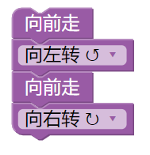

迷宫
Blockly Games 总共有七个主题游戏，第二个主题是迷宫，迷宫里又分成十个不同的关卡，由简到难，学习如何运用回圈及条件的概念，点击进去后会从第一关开始，一样会有提示说明积木的组合方法，依照提示摆上积木后，点击红色的执行程式按钮，就能看看有没有闯关成功。
如果没有成功，可以点击重设按钮让小人回到起点重新开始。如果成功了，会出现积木的JavaScript 程式码，告诉你所组合的积木是应用什么指令运行的，可以从这里开始了解程式运作的概念。
游戏连结：Blockly Games迷宫
第一关
运用两步向前移动的积木到达目的地，解答：
第二关
增加方向的积木，解答：

第三关
前两关都是单纯的走一步放一个积木，但这样的话如果路途很长，就要放很多个向前移动的积木，所以第三关开始会限制积木数量，并且运用到重复执行的绿色回圈积木，放在回圈里的积木会不断重复执行直到走到目的才会结束。
只要用两个积木就可以走完很长的路径，解答：

第四关
路径是一直重复左转、右转，所以可以把方向和移动积木一起放到重复执行的积木中，解答：

第五关
会提示你一个有趣的小惊喜，点击右上角的黄色小人可以变换迷宫主题，不同主题还有不同的配音，在小人左边的按钮则可以储存并分享你的积木组合网址。

可以将只执行一次和重复执行的积木互相搭配，解答：

第六关
不只是移动和重复执行积木，再加上逻辑积木的运用，当迷宫路径和蓝色积木所叙述的情境相同，就会执行他包含的积木内容，如果情境不同，则不会执行。
蓝色积木的情境可以更改也可以重复执行，运用不同的情境搭配移动积木来走到目的地

第六关解答，先往前走，如果侦测到左边没有路，就不左转、继续往前走，如果左边有路，就先左转再往前走，重复这样的步骤一直到目的地：

第七关
这关开始有叉路和死路，可以发现目的地是在一直右转后可以到达，所以让积木只要侦测到右边有路可以走，就右转，其他的路段只要不符合积木的情境，就都不会执行。
路径提示：

解答：

第八关
只有一条路径，所以让他侦测到有路可以转就转弯，重复直到目的地，解答：

第九关
增加更进阶的蓝色逻辑积木，可以放入两种不同的移动积木，如果符合叙述的情境就会执行上面的积木，如果不符合，就会执行下面否则里的积木。
这一关虽然路很多很复杂，但其实可以发现，只需要两次左转就可以到达目的地，我们让小人侦测到只要前面有路可以走就往前走，否则没有路可以走的话，就执行左转，再重复这样的动作直到走到终点。
路径提示：

解答：

第十关
恭喜来到迷宫的最后一关，也是最难的一关，以下提供一种解答，一开始有提示告诉你可以靠左边走，所以我们沿着小人左方的路径，只要左边有路就先左转后再移动，没有左边的路则往前走，如果左边和直行都没办法，才选择右转，走进死路也没关系只要再走出来即可。
路径提示：

解答：